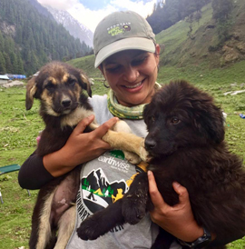
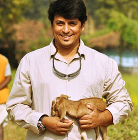
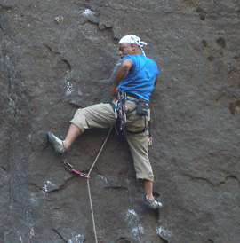

Earthwise is the brain child of Indrajit and Manjiri Latey, who are both ardent outdoor aficionados and wild-lifers. Having spent most of their lives travelling and working in forests and mountains, 'Earthwise' is their dream venture of extending their passion with a larger community. Through their outdoor sojourns, both Indrajit & Manjiri have experienced tremendous personal transformations. They wish to extend this magic to more people and have them experience the therapeutic value of the outdoors. An addiction and passion for the outdoors has helped them see beyond the stereotypical perceptions of a tourist, as they are working to educate people of all ages, in making this planet a better place to live in!

Manjiri Latey
Manjiri has been an avid trekker and wildlife enthusiast and owes her passion for the outdoors to her parents, who were keen mountaineers themselves. For the last 30 years, she has practiced as a ‘Facilitator in Outdoor Education and Experiential Learning’ workshops using the tremendous potential of the outdoors for a spectrum of subjects, from leadership and self-esteem, to niche issues like multiple intelligences, overcoming fears & phobias, de-addiction, to exploring consciousness. She has travelled extensively, both within the country and internationally to offbeat places in pursuit of exploring the destinations & her own potential.
With a ‘Masters in Outdoor Education’ from University of Wales (UK), Manjiri is a ‘Certified Master Trainer in Neuro Linguistic Programming’ (NLP) with NFNLP- USA; and holds a ‘Diploma in Training and Development’ from Indian Society of Training and Development (ISTD), New Delhi. She is a certified ‘Practitioner of New Code NLP’ having learnt with Dr. John Grinder (Co-founder of NLP). She is also a passionate and trained ‘Telepathic interspecies communicator’ having learnt with telepathic communicators like Maia Kincaid, Carol Gurney & Kim Pickett. Manjiri continues to study with the Arthur Findlay college in London in the field of Psychic sciences & Mediumship.
Over the past 2 decades she has also been facilitating workshops on how to use the power of telepathy & intuition in everyday life. Manjiri believes that there is nothing under the sun that cannot be learnt in the outdoors and is a proponent of using nature as a guide and teacher.

Indrajit (Gangadhar Latey)
Gangadhar Latey, a.k.a Indrajit, has spent over three decades immersed in the world of wildlife, nature, and adventure. His journey began in childhood, when long summers spent in the forests of Melghat Tiger Reserve in northern Maharashtra, sparked a lifelong passion for the natural world.
With over 32 years of experience in wildlife and the outdoors, Indrajit began his career with Nature Trails, an environmental education campsite, before working as a naturalist with WWF Pune. His five-year tenure in Kanha National Park in Madhya Pradesh deepened his understanding of Central Indian forests; an area that has since become his specialty.
As a passionate photographer and naturalist, Indrajit has extensive knowledge of ornithology, mammals, and natural history. He has travelled widely across India, exploring more than 80 national parks and wildlife sanctuaries - from the Himalayan landscapes to Kaziranga in the east, the forests of South India, the Andaman & Nicobar & Lakshadweep Islands, to the lion landscapes of western India. For the past 10 years, he has been leading expeditions to Ladakh in search of the elusive Snow Leopard, guiding wildlife photographers and nature enthusiasts into one of the most challenging and rewarding wildlife environments in the world.
Africa was a childhood dream that Indrajit eventually fulfilled & has been leading groups to Kenya and Tanzania since 2012. He has also written forewords for renowned wildlife photographers and has collaborated with international photographers and naturalists, including Michel Zoghzoghi, Jonathan Scott, Andy Biggs, Art Wolff, and Todd Gustafson.
At the heart of his work lies a strong belief that modern society has drifted away from nature. Through guiding, education, and storytelling, Indrajit strives to reconnect people - especially local communities - with the natural world. He believes that protecting wildlife and natural landscapes is essential not only for biodiversity, but for the long-term survival and well-being of humanity.
Janhavi Patwardhan
Janhavi Patwardhan is a photographer and English literature major from Pune. She is also an NLP practitioner who has facilitated NLP-based workshops with a focus on linguistics and associated behaviour. She is currently curating programs on personal transformation through metaphors and language. As a parent, she endeavours to consciously raise her child, guided by the awareness and knowledge from everything she has learned.
She is an avid reader, enjoys meaningful conversations, and takes pleasure in the small things in life.

Sachin Gaikwad
The term 'on the rocks' has a whole new meaning for our man!!! A rock climber at heart, Sachin is our adventure specialist. Having completed his 'Basic and Advance Mountaineering Courses' from the WHMI - Manali & Austrian certification in 'Basic and intermediate course in artificial wall climbing', he has 10 Himalayan expeditions under his belt. One of his highlight expeditions has been the Mt. Shiva ascent in 1990, which was the first Indian civilian expedition. As an ace rock climber he has scaled the Kokan Kada (1,200ft) and the Dhakoba Climb (3,500 Ft) both in Apline style.
With his strong technical know how, Sachin has also been working with Petzl - as in industrial trainer. He has recently been certified by the IFSC as a belayer, along with working as a technical advisor and chief belayer at the Zonal and National artificial wall climbing competitions.